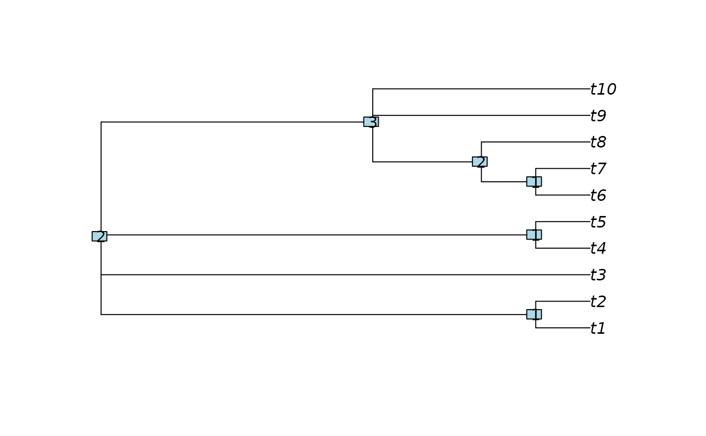

NodeDepth() evaluates how "deep" each node is within a tree.
Arguments
- x
A tree of class
phylo, its$edgeproperty, or a list thereof.- shortest
Logical specifying whether to calculate the length of the shortest away-from-root path to a leaf. If
FALSE, the length of the longest such route will be returned.- includeTips
Logical specifying whether to include leaves (each of depth zero) in return value.
Value
NodeDepth() returns an integer vector specifying the depth of
each external and internal node in x.
Details
For a rooted tree, the depth of a node is the minimum (if shortest = TRUE)
or maximum (shortest = FALSE) number of edges that must be traversed,
moving away from the root, to reach a leaf.
Unrooted trees are treated as if a root node occurs in the "middle" of the tree, meaning the position that will minimise the maximum node depth.
See also
ape::node.depth returns the number of tips descended from a
node.
Other tree navigation:
AncestorEdge(),
CladeSizes(),
DescendantEdges(),
EdgeAncestry(),
EdgeDistances(),
ListAncestors(),
MRCA(),
MatchEdges(),
NDescendants(),
NodeNumbers(),
NodeOrder(),
RootNode()
Examples
tree <- CollapseNode(BalancedTree(10), c(12:13, 19))
plot(tree)
nodelabels(NodeDepth(tree, includeTips = FALSE))
